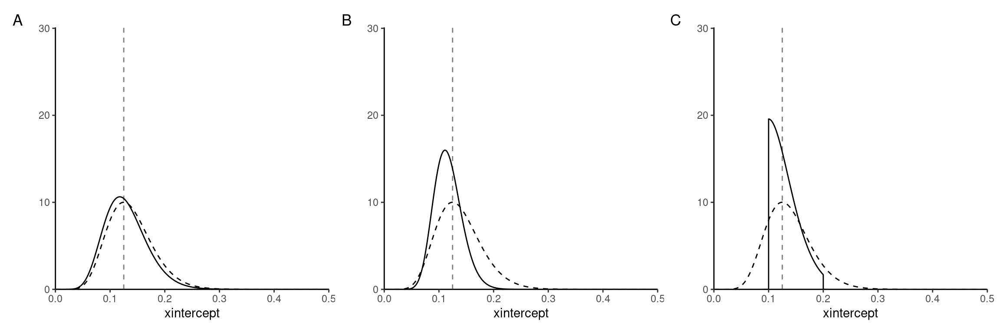
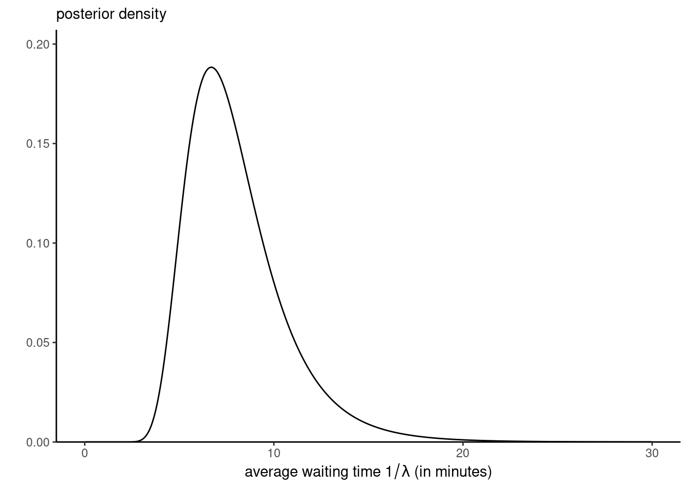
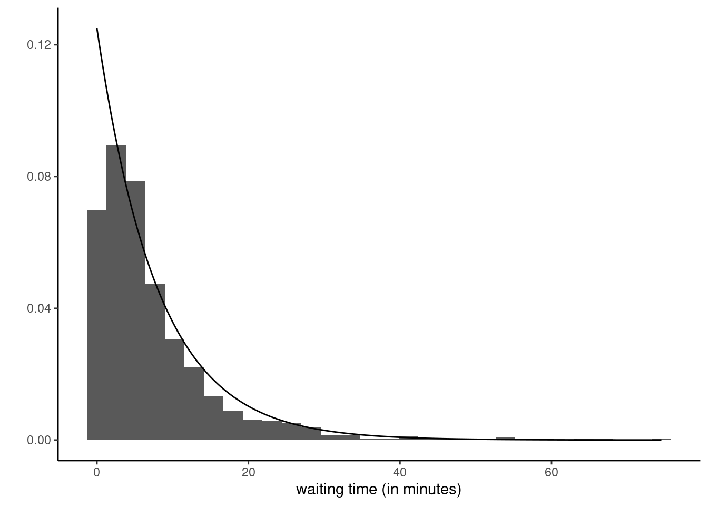

Solution 1
You consider the waiting times between buses coming to HEC. Your bus line has frequent buses, but you decide to check the frequency. From your prior experience, you know that measured waiting times range between 3 and 15 minutes. You collect data over the two first week of classes and get an average of 8 minutes based on 10 observations.
For modelling, we consider data to arise an independent and identically distributed sample from an exponential distribution with rate \(\lambda>0\), with associated density \(f(x) = \lambda \exp(-\lambda x)\).
Exercise 1.1
Compute the marginal likelihood when the prior for \(\lambda\) is
- an exponential distribution with rate \(\kappa>0\), with prior density \(p(\lambda) = \kappa \exp(-\lambda\kappa)\);
- same, but truncated above at 1, so the density is \(p(\lambda) = \kappa \exp(-\lambda\kappa)\mathrm{I}\{\lambda \leq 1\}\); the indicator function \(\mathrm{I}(\cdot)\) equals one if the condition is true and zero otherwise.
- \(\lambda \sim \mathsf{Ga}(\alpha, \beta)\), a gamma distribution with shape \(\alpha>0\) and rate \(\beta>0\), with prior density \(p(\lambda) = \beta^\alpha\lambda^{\alpha-1}\exp(-\beta \lambda)/\Gamma(\alpha)\).
Deduce that, in all cases above and up to truncation, the posterior distribution is a gamma distribution.
Solution. The likelihood is \[\begin{align*} L(\lambda) = \prod_{i=1}^n \lambda \exp(-\lambda y_i) = \lambda^n \exp(-\lambda n\overline{y}), \end{align*}\] where \(\overline{y}=8\) is the sample mean and \(n=10\) the number of observations.
The exponential distribution is a special case of the gamma, where \(\lambda \sim \mathsf{Exp}(\kappa) \equiv \mathsf{Ga}(1, \kappa)\).
The posterior densities are equal, up to proportionality, to \[\begin{align*} p_1(\lambda \mid y) &\propto\lambda^{n}\exp\{-(n\overline{y}+\kappa)\lambda\} \\ p_2(\lambda \mid y) &\propto\lambda^{n}\exp\{-(n\overline{y}+\kappa)\lambda\}\mathrm{I}\{\lambda \geq 1\} \\ p_3(\lambda \mid y) &\propto\lambda^{n+\alpha-1}\exp\{-(n\overline{y}+\beta)\lambda\} \end{align*}\] so these are \(\mathsf{Ga}(n+1, n\overline{y} + \kappa)\), \(\mathsf{Ga}(n+1, n\overline{y} + \kappa)\) truncated over \([0,1]\) and \(\mathsf{Ga}(n+\alpha, n\overline{y} + \beta)\).
Let \(\Gamma(\cdot)\) denote the gamma function and \(\gamma(a, x)\) the lower incomplete gamma function, \(\gamma(a, x= \int_0^x t^{a-1}\exp(-t) \mathrm{d} t.\) The marginal likelihood can be obtained either by integrating the product of the likelihood and prior, or upon noting that
\[\begin{align*}
p_i(\boldsymbol{y}) = \frac{L(\lambda) p_i(\lambda)}{p_i(\lambda \mid \boldsymbol{y})}
\end{align*}\] so we get \[\begin{align*}
p_1(\boldsymbol{y}) &= \kappa n!(n\overline{y}+\kappa)^{-(n+1)},\\
p_2(\boldsymbol{y}) &= p_1(\boldsymbol{y}) \times \gamma\{n+1, (n\overline{y}+\kappa)\}, \\
p_3(\boldsymbol{y}) &= \frac{\Gamma(n + \alpha)\beta^\alpha}{\Gamma(\alpha)(n\overline{y} + \beta)^{n+\alpha}}.
\end{align*}\]
Exercise 1.2
Consider the following priors for the reciprocal expected waiting time, \(\lambda\).
- a gamma with rate \(\beta=100\) and shape \(\alpha = 10\)
- an exponential with rate \(5\)
- a uniform prior on the unit interval \([5,10]\) for \(1/\lambda\)
Associate each plot of the posterior with each of the priors. Which one seems most suitable for modelling?
Explain what would happen to the posterior curve if we increased the sample size.
Solution. As the sample size increase, the curve becomes more concentrated around the maximum a posteriori value, which approaches the maximum likelihood estimate, \(\widehat{\lambda}=1/8\), regardless of the prior function (if it is untruncated).
The mode of a gamma distribution with rate \(\beta\) and shape \(\alpha\) is \((\alpha-1)/\beta\) for \(\alpha>1\).
The truncated distribution (bottom left) is clearly identified from the “stubborn” prior, which is \(p(\lambda) \propto \mathrm{I}(1/10 < \lambda < 1/5)/\lambda^2\), so 3C. Prior 1 has an average of 1/10 (less than the MLE) and provides nearly as much information as the data, so it is the more peaked posterior, so 1B. The exponential, or \(\mathsf{Ga}(1,5)\), is much less informative than the likelihood and posterior should be only slightly different for the other, so 2A.
Exercice 1.3
The purpose of this exercise is to show that even one-dimensional numerical integration requires some care. Consider a half Cauchy prior over the positive half line, with density \(f(x) = 2\pi^{-1}(1+x^2)^{-1}\mathrm{I}(x \geq 0)\). Using a grid approximation in increments of 0.01, evaluate the unnormalized posterior density from 0 until 30 minutes\(^{-1}\). Compare this approximation with that of quadrature methods via integrate and return the corresponding estimates of the normalizing constant. Indication: check the values and make sure the output is sensical. Modify the integrand if necessary.
Plot the posterior distribution of \(\omega = 1/\lambda\), the average waiting time.
Solution. For an unnormalized density \(g(x)\) such that \(\int g(x) \mathrm{d} x = c\), the normalizing constant is \(1/c\).
First, remember that the density function of the scale \(\omega = \lambda^{-1}\) is related to the one of the rate \(\lambda\) through a change of variable, with Jacobian \(\omega^{-2}\).
# Likelihood function - NOTE FORMULATION TO AVOID NUMERICAL OVERFLOW
lik <- function(x, n = 10, ybar = 8){exp(n*(log(x)-ybar*x))}
# Density of Cauchy over positive real line
dfoldedCauchy <- function(x){2/pi/(1+x^2)}
# Check integral
integrate(dfoldedCauchy, lower = 0, upper = Inf)1 with absolute error < 1.6e-10# Unormalized posterior
unnorm_post <- function(x){dfoldedCauchy(x)*lik(x)}
(icst_lambda <- integrate(f = unnorm_post, 0, 100))7.074775e-15 with absolute error < 1.4e-14# Check that the normalized value gives integral of 1
cst_test <- integrate(f = function(x){unnorm_post(x)/icst_lambda$value},
lower = 0,
upper = 100)Ouch! The integral is nearly zero, and there is significant risk of numerical underflow and the reciprocal of the integrals are one order of magnitude apart, even when the sample size is not large. The normalizing constant, the reciprocal of the marginal likelihood, is not well estimated. The absolute error is of higher order than the estimate of the marginal likelihood, and this will be more problematic in higher dimensions.
To palliate to this, we could slightly modify the integrand by scaling the likelihood by \((n\overline{y} )^{n+1}/n!\), the normalizing constant of the gamma integral, which is around \(2.4 \times 10^{14}\). This fixes the issue below.
# Scale likelihood by using gamma distribution normalizing constant
slik <- function(x, n = 10, ybar = 8){
exp(-lgamma(n+1) + (n+1)*log(n*ybar) + n*(log(x)-ybar*x))
}
# Unnormalized posterior, version 2
unnorm_post2 <- function(x){dfoldedCauchy(x)*slik(x)}
# Define grid and evaluate product
grid <- seq(from = 0, to = 30, by = 0.01)
marglik_grid <- sum(unnorm_post2(grid))*0.01
# Is the grid approximation good enough?
# check equality to numerical tolerance
all.equal(integrate(f = unnorm_post2, 0, 100)$value, marglik_grid)[1] TRUEnorm_cst <- 1/marglik_gridThe prior normalizing by a known constant fixes the numerical issues. Generally, one would tend to build an approximation only at the mode and match the curvature of the posterior there (using, e.g., a quadratic approximation to the posterior density).
For the posterior density, we can simply use the approximation with \(p(\lambda \mid \boldsymbol{y}) \approx \widehat{c} L(\lambda)p(\lambda)\). The posterior density for the reciprocal rate is \(p(\omega \mid \boldsymbol{y}) \approx \widehat{c} L(\omega^{-1})p(\omega^{-1})\omega^{-2}\) (don’t forget the Jacobian)!
Code
library(ggplot2)
ggplot() +
stat_function(fun = function(x){unnorm_post2(1/x)*norm_cst/x^2},
xlim = c(0, 30),
n = 1001) +
labs(y = "",
x = expression(paste("average waiting time ", 1/lambda, " (in minutes)")),
subtitle = "posterior density") +
scale_y_continuous(limits = c(0, NA), expand = expansion(mult = c(0, .1))) +
theme_classic()
Exercice 1.4
Consider \(\lambda \sim \mathsf{Ga}(\alpha = 1.4, \beta=0.2)\).
- Return the posterior mean, posterior median and maximum a posteriori (MAP).
- Return the 89% equitailed percentile credible interval.
- Return the 50% highest posterior density (HPD) interval (harder).
Next, draw 1000 observations from the posterior predictive distribution and plot a histogram of the latter. Compare it to the exponential distribution of observations.
Would the posterior predictive change if you gathered more data? Justify your answer and explain how it would change, if at all.
Solution. We have already determined that the posterior is a Gamma distribution \(\mathsf{Ga}(a, b)\), where \(a= \alpha+ n= 11.4\) and \(b=n\overline{y} + \beta = 80.2\). We can query the moments directly: the mode is \((a-1)/b\) and the mean \(a/b\), while the median must be found numerically using the quantile function.
a <- 11.4 # shape parameter
b <- 80.2 # rate parameter
alpha <- 0.11 # level
postmean <- a/b # posterior mean
postmed <- qgamma(p = 0.5, shape = a, rate = b) # median
postmode <- (a-1)/b # mode
credint <- qgamma(p = c(alpha/2, 1-alpha/2), shape = a, rate = b)
# Documentation states you must return the quantile function
HDInterval::hdi(
object = qgamma,
shape = a,
rate = b,
credMass = 0.50) lower upper
0.1042228 0.1589696
attr(,"credMass")
[1] 0.5# Alternatively, find this numerically
# MAP via minimization of the negative log likelihood
MAP <- optimize(
f = function(x){-dgamma(x, shape = a, rate = b, log = TRUE)},
interval = qgamma(p = c(0.2,0.8), shape = a, rate = b)
)$minimum
# Other quantities approximated by Monte Carlo
# Sample from posterior
post_samp <- rgamma(n = 1e4, shape = a, rate = b)
# Sample mean and sample quantiles
mean(post_samp)[1] 0.1422132quantile(post_samp, c(alpha/2, 0.5, 1-alpha/2)) 5.5% 50% 94.5%
0.08286817 0.13834515 0.21530067 # Highest posterior density interval
credHDI <- HDInterval::hdi(
object = post_samp,
credMass = 0.50)
credHDI lower upper
0.1061453 0.1597930
attr(,"credMass")
[1] 0.5Up to three significant digits, the posterior mean is 0.142, the median is 0.138 and the mode 0.13. The bounds of the equitailed 89% credible interval are [0.082, 0.215], those of the 50% HDPI [0.1061453, 0.159793].
For the posterior predictive, we simply take the samples from the posterior, post_samp, and generate for each rate a new exponential
Code
postpred_samp <- rexp(n = 1000, rate = post_samp[seq_len(1000)])
ggplot(data = data.frame(x = postpred_samp))+
geom_histogram(aes(x = x, y = ..density..)) +
# the likelihood is proportional to a gamma
stat_function(fun = dexp,
n = 1001,
args = list(rate = 1/8) # mle is average
) +
labs(x = "waiting time (in minutes)",
y = "") +
scale_x_continuous(limits = c(0, NA), expand = expansion(mult = c(0, .1))) +
scale_y_continuous(limits = c(0, NA), expand = expansion(mult = c(0, .1))) +
theme_classic()